Префектура Хиросима · город Хиросима · покупки
«BANCART»: рынок местных товаров в здании банка в Хиросиме
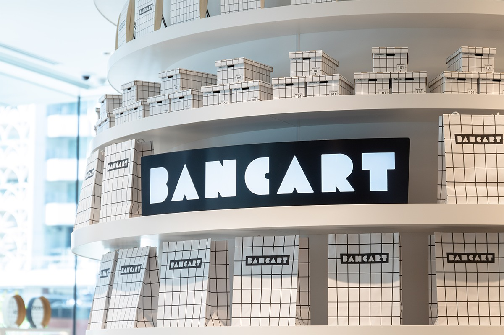
Маркет местных товаров устроили прямо на первом этаже головного офиса банка. Здесь собрали лучшее из Хиросимы и соседних префектур и придумали вещи, которых больше нигде не купить.
Место
Рынок в вестибюле банка
На первом этаже головного офиса группы «Хирогин» в центре Хиросимы открылся маркет «BANCART». Идея необычная: рынок местных товаров устроили в здании банка, и это первый такой случай в стране. Имя сложили из итальянского «BANCO», от которого произошло слово «банк», и «MERCATO», то есть рынок; заодно в название встроили английское «CART», тележку для покупок. Получилось имя для новой площадки, которая должна оживить квартал.
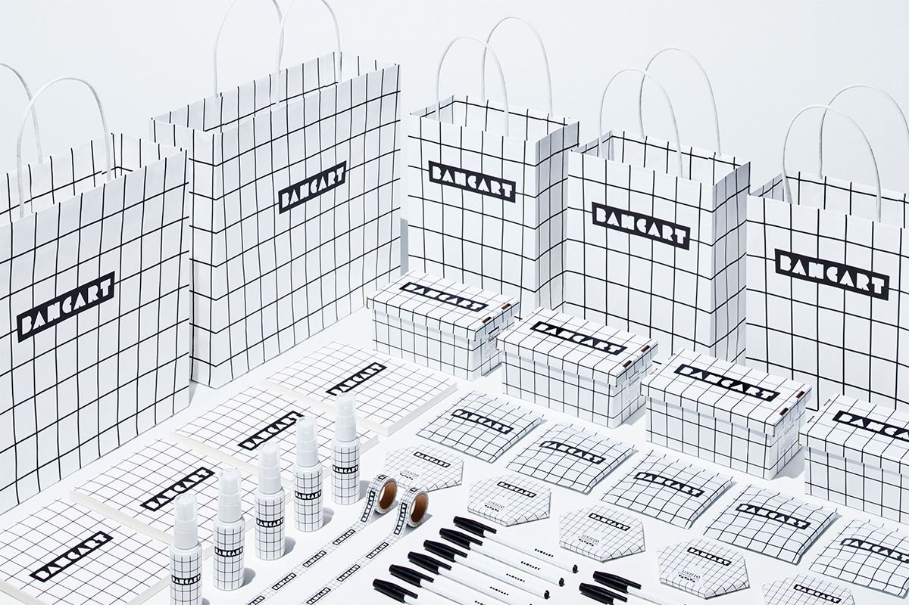
Товары
Всё лучшее из западной Японии
В зале нашлось место и товарам, которые придумал сам банк, и конвертам для торжественных случаев, и канцелярии, посуде, приправам, сладостям. География широкая: Хиросима и соседние префектуры Ямагути, Окаяма, Эхимэ, Симанэ, Хёго. Правило отбора простое и понятное каждому: раз вещь нужна каждый день, пусть она будет хорошей.
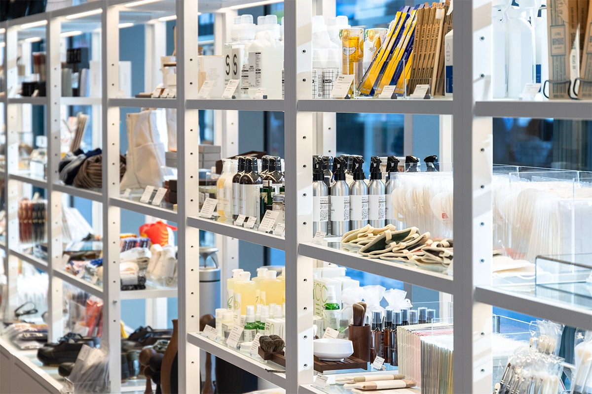
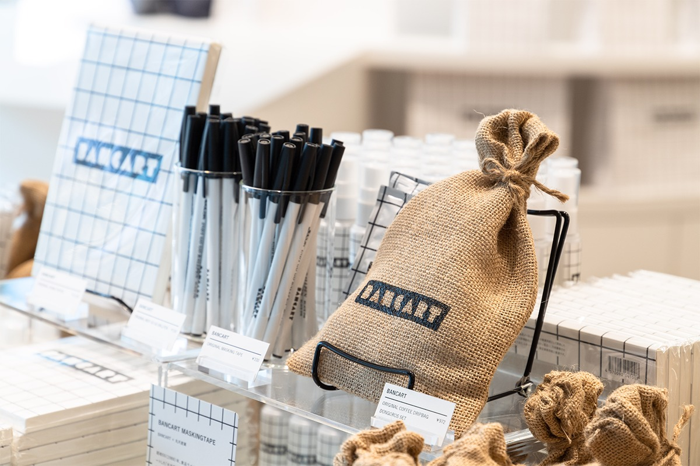
Своё
Вещи, которых нет больше нигде
К открытию «BANCART» вместе с местными производителями сделал собственные и совместные вещи. Такие сувениры охотно берут и свои, и приезжие.
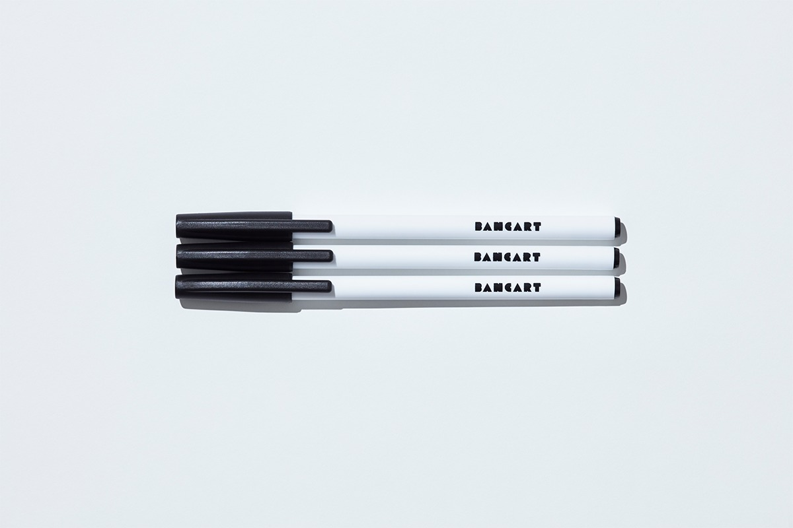
Ручку «INDY GO GO BALLPEN» выпустила «Sailor Pen» из Курэ, та самая фирма, что первой в Японии начала делать авторучки, шариковые ручки и кисти-фудэпэн. На корпус нанесли логотип маркета. Цена: 150 иен.
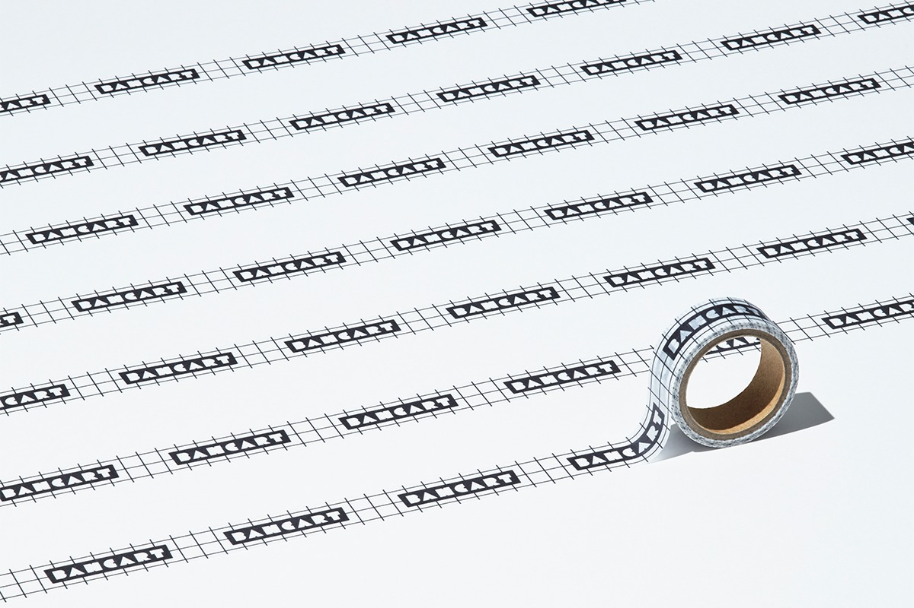
Маскирующую ленту с мягкой фактурой васи сделала компания «Марутэн сангё» из Фукуямы, известная этикетками и специальной печатью. Цена: 330 иен.
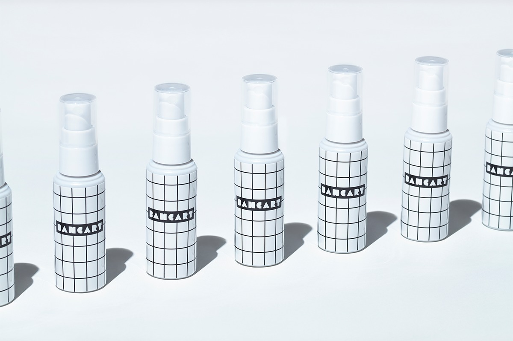
Средство для рук «Какирара» придумала хиросимская дорожно-строительная компания «Синмарусэ кодзи». Основа у него необычная: сто процентов природного сырья из устричных раковин. Дорожный флакон на 50 мл. Цена: 825 иен.
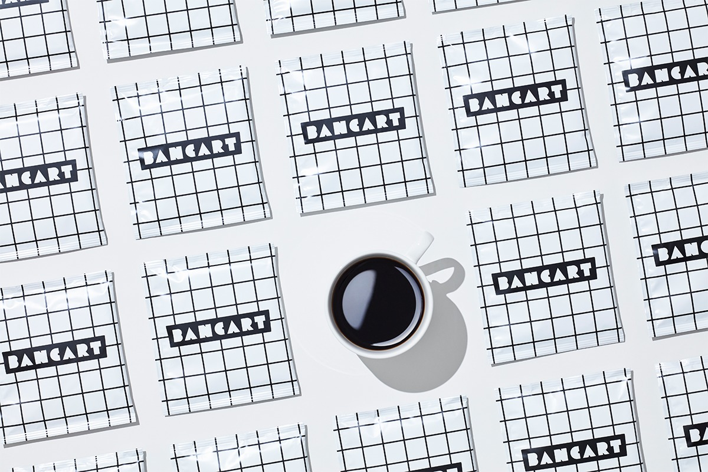
Кофейный набор «ORIGINAL DRIPBAG DONGOROS SET» собрали с обжарщиками «OBSCURA COFFEE ROASTERS». Смесь, которую подают в соседнем кафе, запечатали в пакетики и сложили в мешок из джута, похожий на те, в которых когда-то перевозили наличные. Цена: 972 иены.
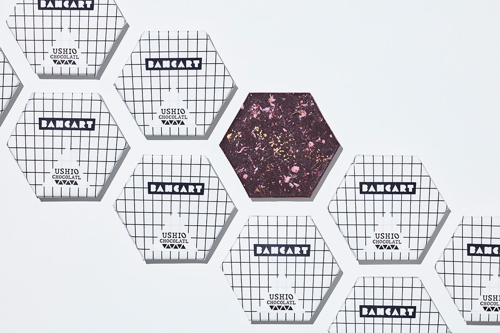
Шоколад «BANCART ORIGINAL CHOCOLATE» сделали вместе с шоколадной фабрикой «USHIO CHOCOLATL» из Ономити. В основе какао с небольшой фермы в индонезийской провинции Джембрана, а сверху лепестки солёной сакуры и золотая пудра. Цена: 1296 иен.
Оформление
Клетка, трапеция и растения
Логотип и всю печатную графику маркета придумала Моэ Фуруя, арт-директор и иллюстратор из бюро «Study and Design», выросшая в Хиросиме. Знак маркета она построила как трапецию, напоминающую банковскую счётную палочку, а клетку перенесла на пакеты и упаковку: её рисунок подсказали фасад банковского здания и тележка для покупок.
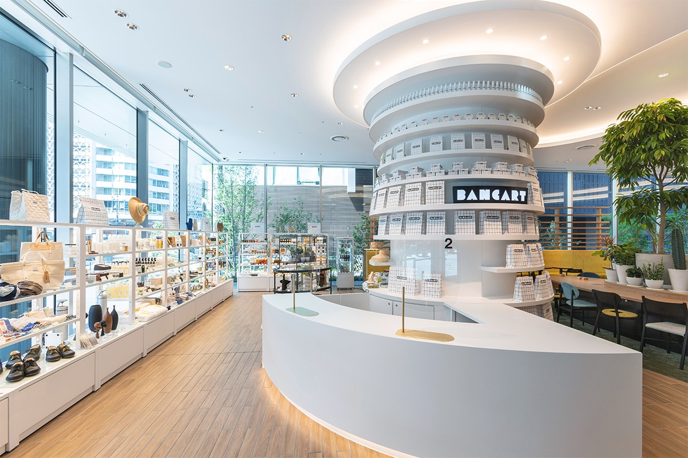
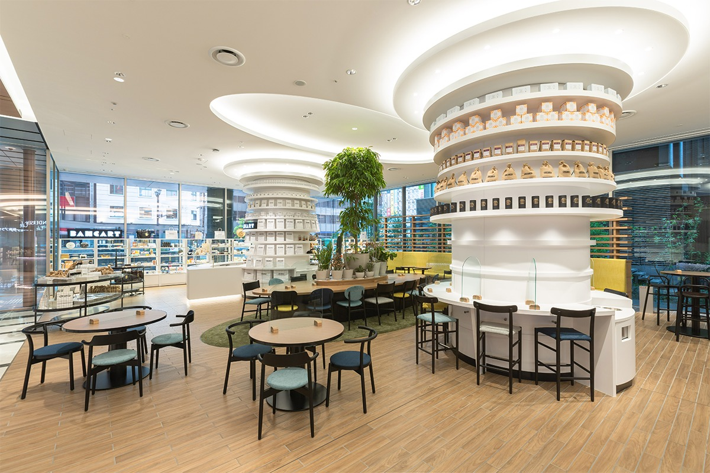
Растения в центре зала расставила хиросимская оранжерея «Кусамура», которая ищет красоту в том, что обычно считают невзрачным. Общую концепцию, отбор товаров и оформление зала вело токийское бюро «method inc.».
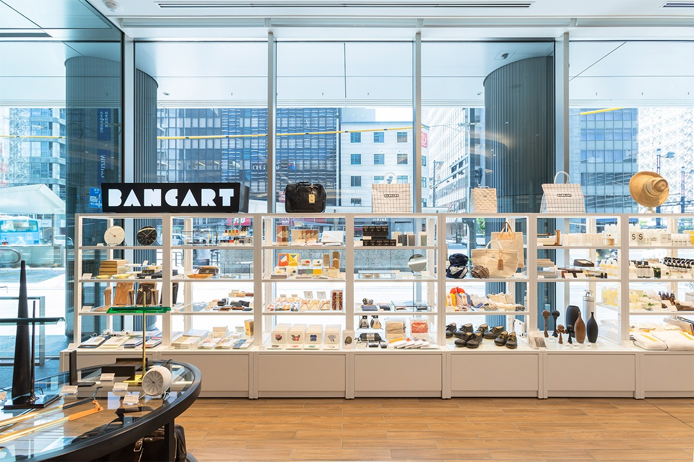
BANCART
- Адрес
- префектура Хиросима, город Хиросима, Камиятё, 1-3-8, первый этаж головного офиса «Хирогин»
- Телефон
- +81 82-504-3192
- Часы работы
- 11:00–19:00
- Выходные
- воскресенье и праздники работают 11:00–18:00
Фото: Хирокуми Кандзаки, Рё Фунамото.